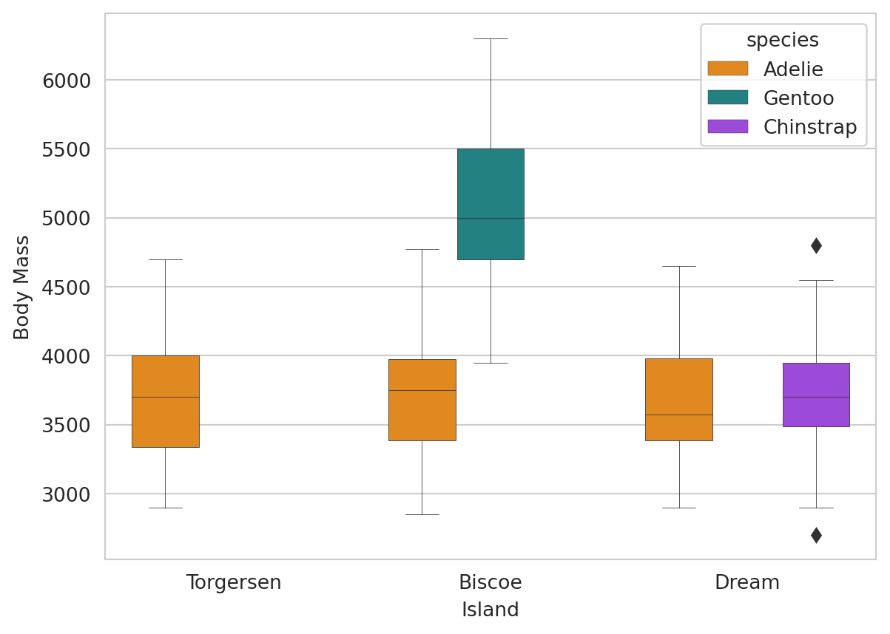
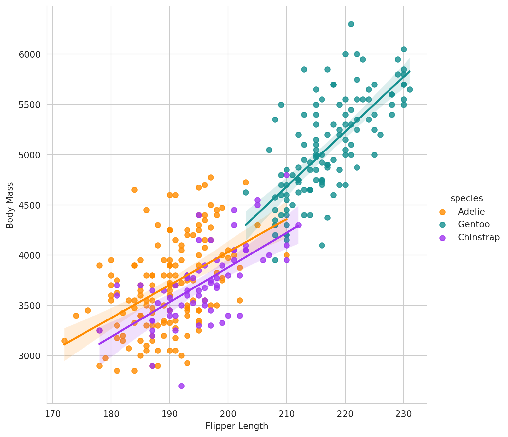

Below is an example to illustrate how to include executable code.
Python Code:
Code
x =5y =3print(x + y)
8
Code
import pandas as pddata = {"calories": [420, 380, 390],"duration": [50, 40, 45]}#load data into a DataFrame object:df = pd.DataFrame(data)print(df)
calories duration
0 420 50
1 380 40
2 390 45
Code
import pandas as pdimport seaborn as sns from palmerpenguins import load_penguinsimport plotly.express as pxsns.set_style('whitegrid')penguins = load_penguins()
Code
g = sns.boxplot(x ='island', y ='body_mass_g', hue ='species', data = penguins, palette=['#FF8C00','#159090','#A034F0'], linewidth=0.3)g.set_xlabel('Island')g.set_ylabel('Body Mass')
Text(0, 0.5, 'Body Mass')

Code
g = sns.lmplot(x="flipper_length_mm", y="body_mass_g", hue="species", height=7, data=penguins, palette=['#FF8C00','#159090','#A034F0'])g.set_xlabels('Flipper Length')g.set_ylabels('Body Mass')

Code
import plotly.express as pxdf = penguinsfig = px.scatter(df, x="flipper_length_mm", y="body_mass_g", color ="sex", facet_col="species")fig.show()